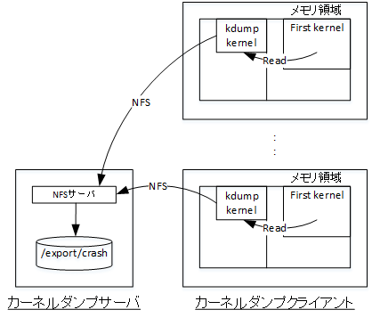

0. 概要
パブリッククラウドに於けるOCIの優位性である ベアメタル・シェイプ は、HPC/GPUクラスタの計算/GPUノード用途や、 ブロック・ボリューム で構築する共有ストレージのNFSサーバ等の高い処理能力を要求されるシステム管理サーバ用途として使用されます。
ここで ベアメタル・シェイプ を使用する計算/GPUノードやシステム管理サーバ（以降”カーネルダンプクライアント”と呼称）は、 ブート・ボリューム をiSCSI接続するため、Linuxカーネルのメモリ領域ダンプ取得を担うkdumpカーネルがデフォルト出力先のルートファイルシステムにカーネルダンプを書き込むことが出来ません。
これに対しkdumpは、ネットワークを介して他のノード（以降”カーネルダンプサーバ”と呼称）にカーネルダンプを書き込む機能を有しており、本テクニカルTipsではこのうちNFSを取り上げてカーネルダンプをカーネルダンプサーバに取得する方法を解説します。
この方法は、HPC/GPUクラスタのようにカーネルダンプクライアントのノード数が多くなる環境では、カーネルダンプサーバ上でカーネルダンプクライアントが接続するサブネットに対してNFSエクスポートするだけで済み、鍵管理の必要なSSHと比較して容易に環境の構築が可能です。

また本テクニカルTipsは、カーネルダンプクライアントが計算ノードの場合とシステム管理サーバの場合を想定し、HPC クラスタネットワーキングイメージ と プラットフォーム・イメージ として提供される Oracle Linux を対象のOSイメージとして取り上げ、それぞれの手順を解説します。
これは、両者の使用するカーネルが以下の点で異なり、カーネルダンプクライアントとしてのセットアップ手順に違いが出るためです。
- kdumpカーネル専用メモリ領域必要サイズ（Mellanox OFEDカーネルモジュール有無による）
- kdumpカーネルの起動を妨げるカーネルブートパラメータの有無
下表は、本テクニカルTipsで取り上げる各ノードタイプ毎のシェイプとOSイメージを示します。
| ノードタイプ | シェイプ | OSイメージ |
|---|---|---|
| カーネルダンプサーバ | 任意のシェイプ | Oracle Linux 8.9 （プラットフォーム・イメージ） |
| カーネルダンプクライアント （計算ノードを想定） |
BM.Optimized3.36 | HPC クラスタネットワーキングイメージ 8.8 （※1） |
| カーネルダンプクライアント （システム管理サーバを想定） |
BM.Optimized3.36 | Oracle Linux 8.9 UEKカーネル （プラットフォーム・イメージ） |
※1）詳細は、OCI HPCテクニカルTips集 の クラスタネットワーキングイメージの選び方 の 1. クラスタネットワーキングイメージ一覧 を参照下さい。
ここでカーネルダンプのトリガーは、 仮想マシン・インスタンス ではOCIコンソールから 診断中断の送信 （Send diagnostic Interrupt）により行いますが、この方法はベアメタルインスタンスでサポートされていません。
このため、本テクニカルTipsで使用しているsysfs仮想ファイルシステムへの書き込みによるカーネルダンプのトリガーが使用できないカーネルハングのような状況でのカーネルダンプ取得を想定し、以下のようなカーネルパニックを引き起こす条件を指定するカーネルパラメータを予め適切に設定します。
$ sudo sysctl -a | grep -e kernel -e vm | grep panic
kernel.hardlockup_panic = 1
kernel.hung_task_panic = 0
kernel.max_rcu_stall_to_panic = 0
kernel.panic = 0
kernel.panic_on_io_nmi = 0
kernel.panic_on_oops = 1
kernel.panic_on_rcu_stall = 0
kernel.panic_on_unrecovered_nmi = 0
kernel.panic_on_warn = 0
kernel.panic_print = 0
kernel.softlockup_panic = 0
kernel.unknown_nmi_panic = 1
vm.panic_on_oom = 0
$
以降では、以下の順にベアメタルインスタンスのカーネルダンプ取得方法を解説します。
- カーネルダンプサーバセットアップ
- カーネルダンプクライアントセットアップ
- カーネルダンプの取得テスト・解析確認
1. カーネルダンプサーバセットアップ
本章は、カーネルダンプサーバのセットアップ手順を解説します。
なおカーネルダンプサーバ用のインスタンスは、カーネルダンプクライアントと同じサブネットに接続されて既にデプロイされているものとします。
カーネルダンプサーバは、カーネルダンプクライアントからNFSでカーネルダンプを受け取るため、NFSサーバとして構築した後カーネルダンプ格納領域をカーネルダンプクライアントに対してNFSエクスポートします。
-
エクスポートファイル作成
カーネルダンプサーバで、 /etc/exports に以下の行を追加し、カーネルダンプクライアントが接続するサブネットに対して /export ディレクトリをエクスポートする設定を加えます。
この際サブネットの指定は、自身の環境に合わせて修正します。$ grep export /etc/exports /export 10.0.0.0/16(rw,sync,no_root_squash) $ -
NFSサーバ起動
カーネルダンプサーバのopcユーザで以下コマンドを実行し、カーネルダンプクライアントからカーネルダンプを /export/crash に書き込めるように構成します。$ sudo mkdir -p /export/crash $ sudo systemctl disable --now firewalld $ sudo systemctl enable --now nfs-server -
NFSサーバ確認
カーネルダンプサーバのopcユーザで以下コマンドを実行し、先の手順が正しく反映されていることを確認します。$ sudo systemctl status firewalld nfs-server rpcbind | grep -e Loaded -e Active -e "service -" ● firewalld.service - firewalld - dynamic firewall daemon Loaded: loaded (/usr/lib/systemd/system/firewalld.service; disabled; vendor preset: enabled) Active: inactive (dead) ● nfs-server.service - NFS server and services Loaded: loaded (/usr/lib/systemd/system/nfs-server.service; enabled; vendor preset: disabled) Active: active (exited) since Mon 2024-02-19 09:37:37 JST; 3s ago ● rpcbind.service - RPC Bind Loaded: loaded (/usr/lib/systemd/system/rpcbind.service; enabled; vendor preset: enabled) Active: active (running) since Mon 2024-02-19 09:17:42 JST; 19min ago $ sudo exportfs /export 10.0.0.0/16 $
2. カーネルダンプクライアントセットアップ
本章は、カーネルダンプクライアントのセットアップ手順を解説します。
この際、システム管理サーバを想定する プラットフォーム・イメージ として提供される Oracle Linux を使用するカーネルダンプクライアントに対し、計算ノードを想定するHPC クラスタネットワーキングイメージ を使用するカーネルダンプクライアントでは追加の手順が必要となるため、適用する手順を自身のカーネルダンプクライアントタイプに合わせて選択します。
なおカーネルダンプクライアント用のインスタンスは、既にデプロイされているものとします。
-
カーネルダンプサーバNFS領域へのアクセス確認（計算ノード・システム管理サーバ）
カーネルダンプクライアントのopcユーザで以下コマンドを実行し、カーネルダンプサーバのカーネルダンプ格納領域にNFSでアクセス出来ることを確認します。
この際IPアドレスは、カーネルダンプクライアントから通信可能なカーネルダンプサーバのものに変更します。$ sudo mkdir -p /mnt/nfs/crash $ sudo mount -t nfs 10.0.2.209:/export/crash /mnt/nfs/crash $ df -h /mnt/nfs/crash Filesystem Size Used Avail Use% Mounted on 10.0.2.209:/export/crash 36G 11G 25G 30% /mnt/nfs/crash $ date | sudo tee -a /mnt/nfs/crash/test.txt Fri Feb 16 15:03:29 JST 2024 $ ls -l /mnt/nfs/crash total 4 -rw-r--r--. 1 root root 29 Feb 16 15:03 test.txt $ -
カーネルダンプ出力先の変更（計算ノード・システム管理サーバ）
カーネルダンプクライアントで、kdump設定ファイルを以下のように修正します。
この際IPアドレスは、カーネルダンプクライアントから通信可能なカーネルダンプサーバのものに変更します。$ diff /etc/kdump.conf_org /etc/kdump.conf 168c168 < #nfs my.server.com:/export/tmp --- > nfs 10.0.2.209:/export/crash 173c173 < path /var/oled/crash --- > path / $ -
カーネルダンプ設定ファイル変更（計算ノード）
カーネルダンプクライアントで、kdump設定ファイルを以下のように修正し、HPC クラスタネットワーキングイメージ に設定されているkdumpカーネルの起動を妨げるカーネルパラメータを除外します。$ sudo diff /etc/sysconfig/kdump_org /etc/sysconfig/kdump 20c20 < KDUMP_COMMANDLINE_REMOVE="hugepages hugepagesz slub_debug quiet log_buf_len swiotlb ignition.firstboot loglevel" --- > KDUMP_COMMANDLINE_REMOVE="hugepages hugepagesz slub_debug quiet log_buf_len swiotlb ignition.firstboot loglevel oci_hpc.rdma_device_names_mode oci_hpc.vnic_device_names_mode" $ -
kdumpサービス再起動（計算ノード・システム管理サーバ）
カーネルダンプクライアントのopcユーザで以下コマンドを実行し、kdumpサービスの再起動でこれまでのkdump関連の設定変更を反映します。$ sudo systemctl restart kdump $ sudo systemctl status kdump | grep -e Loaded -e Active Loaded: loaded (/usr/lib/systemd/system/kdump.service; enabled; vendor preset: enabled) Active: active (exited) since Mon 2024-02-19 10:01:49 JST; 1min 3s ago $ -
kdumpカーネル専用メモリ領域サイズ変更（計算ノード）
カーネルダンプクライアントで、GRUBブートローダ設定ファイルを以下のように修正し、OS再起動でこれを反映、起動後にkdumpカーネル専用メモリ領域サイズが設定どおりになっていることを確認します。
なお設定ファイルの変更点は、 crashkernel 値の auto から 4096M への変更です。$ diff /etc/default/grub_org /etc/default/grub 8c8 < GRUB_CMDLINE_LINUX="crashkernel=auto LANG=en_US.UTF-8 console=tty0 console=ttyS0,115200 rd.luks=0 rd.md=0 rd.dm=0 rd.lvm.vg=ocivolume rd.lvm.lv=ocivolume/root rd.net.timeout.carrier=5 netroot=iscsi:169.254.0.2:::1:iqn.2015-02.oracle.boot:uefi rd.iscsi.param=node.session.timeo.replacement_timeout=6000 net.ifnames=1 nvme_core.shutdown_timeout=10 ipmi_si.tryacpi=0 ipmi_si.trydmi=0 libiscsi.debug_libiscsi_eh=1 loglevel=4 ip=single-dhcp,dhcp6 rd.net.timeout.dhcp=10 crash_kexec_post_notifiers processor.max_cstate=1 intel_idle.max_cstate=0 mce=ignore_ce nohz=off skew_tick=1 iommu=pt numa_balancing=disable selinux=0 oci_hpc.rdma_device_names_mode=2 oci_hpc.vnic_device_names_mode=1 " --- > GRUB_CMDLINE_LINUX="crashkernel=4096M LANG=en_US.UTF-8 console=tty0 console=ttyS0,115200 rd.luks=0 rd.md=0 rd.dm=0 rd.lvm.vg=ocivolume rd.lvm.lv=ocivolume/root rd.net.timeout.carrier=5 netroot=iscsi:169.254.0.2:::1:iqn.2015-02.oracle.boot:uefi rd.iscsi.param=node.session.timeo.replacement_timeout=6000 net.ifnames=1 nvme_core.shutdown_timeout=10 ipmi_si.tryacpi=0 ipmi_si.trydmi=0 libiscsi.debug_libiscsi_eh=1 loglevel=4 ip=single-dhcp,dhcp6 rd.net.timeout.dhcp=10 crash_kexec_post_notifiers processor.max_cstate=1 intel_idle.max_cstate=0 mce=ignore_ce nohz=off skew_tick=1 iommu=pt numa_balancing=disable selinux=0 oci_hpc.rdma_device_names_mode=2 oci_hpc.vnic_device_names_mode=1 " $ sudo grub2-mkconfig -o /boot/efi/EFI/redhat/grub.cfg Generating grub configuration file ... Adding boot menu entry for EFI firmware configuration done $ sudo shutdown -r now $ dmesg | grep -e "Reserving .* crashkernel" [ 0.000000] Reserving 256MB of low memory at 960MB for crashkernel (System low RAM: 1702MB) [ 0.000000] Reserving 4096MB of memory at 522224MB for crashkernel (System RAM: 523942MB) $なお、この設定変更によりプライマリカーネルが利用できるメモリ領域が減少することに留意します。
また、kdumpカーネルの起動が専用メモリ領域不足により失敗する場合は、コンソールに以下のようなOOM killer発動を示すメッセージが出力されます。[ 8.956314] systemd-udevd invoked oom-killer: gfp_mask=0x6040c0(GFP_KERNEL|__GFP_COMP), order=0, oom_score_adj=0
3. カーネルダンプの取得テスト・解析確認
本章は、カーネルダンプクライアントでカーネルクラッシュをトリガーしてカーネルダンプサーバでカーネルダンプの取得を確認、取得したカーネルダンプをcrashコマンドで読み込んで解析できることを確認します。
-
カーネルクラッシュのトリガー
カーネルダンプクライアントのopcユーザで以下コマンドを実行し、カーネルクラッシュをトリガーします。$ echo c | sudo tee -a /proc/sysrq-trigger -
カーネルダンプ取得確認
カーネルダンプサーバのopcユーザで以下コマンドを実行し、カーネルダンプが正しく取得できていることを確認します。
ここで kdump_dir は、カーネルダンプ作成時に実際に作成されたディレクトリ名に置き換えます。$ ls -lh /export/crash/kdump_dir/ total 2.7G -rw-------. 1 root root 154K Feb 16 15:43 kexec-dmesg.log -rw-------. 1 root root 2.7G Feb 16 15:43 vmcore -rw-------. 1 root root 139K Feb 16 15:42 vmcore-dmesg.txt $ -
カーネルダンプ解析準備
カーネルダンプサーバのopcユーザで以下コマンドを実行し、カーネルダンプ解析に必要なRPMをインストールします。
ここで kdump_dir は、カーネルダンプ作成時に実際に作成されたディレクトリ名に置き換えます。[カーネルダンプクライアントが計算ノードの場合]
$ sudo dnf install -y crash : $ sudo crash --osrelease /export/crash/kdump_dir/vmcore 4.18.0-477.27.1.el8_8.x86_64 $ wget https://oss.oracle.com/ol8/debuginfo/kernel-debuginfo-4.18.0-477.27.1.el8_8.x86_64.rpm : $ wget https://oss.oracle.com/ol8/debuginfo/kernel-debuginfo-common-x86_64-4.18.0-477.27.1.el8_8.x86_64.rpm : $ sudo rpm -Uhv ./kernel-debuginfo-4.18.0-477.27.1.el8_8.x86_64.rpm kernel-debuginfo-common-x86_64-4.18.0-477.27.1.el8_8.x86_64.rpm : $[カーネルダンプクライアントがシステム管理サーバの場合]
$ sudo dnf install -y crash : $ sudo crash --osrelease /export/crash/kdump_dir/vmcore 5.15.0-202.135.2.el8uek.x86_64 $ wget https://oss.oracle.com/ol8/debuginfo/kernel-uek-debuginfo-5.15.0-202.135.2.el8uek.x86_64.rpm : $ wget https://oss.oracle.com/ol8/debuginfo/kernel-uek-debuginfo-common-5.15.0-202.135.2.el8uek.x86_64.rpm : $ sudo rpm -Uhv ./kernel-uek-debuginfo-5.15.0-202.135.2.el8uek.x86_64.rpm ./kernel-uek-debuginfo-common-5.15.0-202.135.2.el8uek.x86_64.rpm : $ -
カーネルダンプの読込み確認
カーネルダンプサーバのopcユーザで以下コマンドを実行し、crashコマンドがカーネルダンプを正しく読み込めることを確認します。
ここで kdump_dir は、カーネルダンプ作成時に実際に作成されたディレクトリ名に置き換えます。[カーネルダンプクライアントが計算ノードの場合]
$ sudo crash /usr/lib/debug/lib/modules/4.18.0-477.27.1.el8_8.x86_64/vmlinux /export/crash/kdump_dir/vmcore : : KERNEL: /usr/lib/debug/lib/modules/4.18.0-477.27.1.el8_8.x86_64/vmlinux [TAINTED] DUMPFILE: /export/crash/10.0.2.188-2024-02-16-15:55:31/vmcore [PARTIAL DUMP] CPUS: 72 DATE: Fri Feb 16 15:55:05 JST 2024 UPTIME: 00:03:08 LOAD AVERAGE: 0.19, 0.25, 0.11 TASKS: 1386 NODENAME: inst-yyovo-kdump-cli RELEASE: 4.18.0-477.27.1.el8_8.x86_64 VERSION: #1 SMP Wed Sep 27 11:14:47 PDT 2023 MACHINE: x86_64 (3000 Mhz) MEMORY: 511.7 GB PANIC: "sysrq: SysRq : Trigger a crash" PID: 7164 COMMAND: "tee" TASK: ff3c139574eec000 [THREAD_INFO: ff3c139574eec000] CPU: 22 STATE: TASK_RUNNING (SYSRQ) crash> q $[カーネルダンプクライアントがシステム管理サーバの場合]
$ sudo crash /usr/lib/debug/lib/modules/5.15.0-202.135.2.el8uek.x86_64/vmlinux /export/crash/kdump_dir/vmcore : : KERNEL: /usr/lib/debug/lib/modules/5.15.0-202.135.2.el8uek.x86_64/vmlinux DUMPFILE: /export/crash/10.0.2.99-2024-02-16-15:42:52/vmcore [PARTIAL DUMP] CPUS: 72 DATE: Fri Feb 16 15:41:35 JST 2024 UPTIME: 00:05:51 LOAD AVERAGE: 0.29, 0.41, 0.20 TASKS: 1240 NODENAME: kdump-cli RELEASE: 5.15.0-202.135.2.el8uek.x86_64 VERSION: #2 SMP Fri Jan 5 16:12:57 PST 2024 MACHINE: x86_64 (3000 Mhz) MEMORY: 511.7 GB PANIC: "Kernel panic - not syncing: sysrq triggered crash" PID: 13259 COMMAND: "tee" TASK: ff26908dd1b0a080 [THREAD_INFO: ff26908dd1b0a080] CPU: 39 STATE: TASK_RUNNING (PANIC) crash> q $